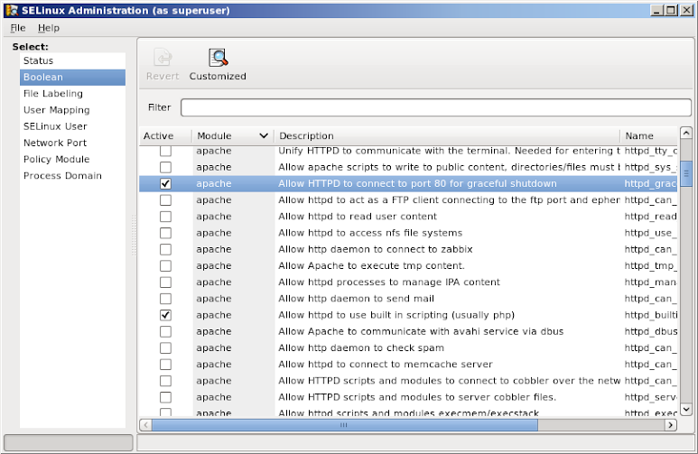

selinux (Security-Enhanced Linux (SELinux)
is a mandatory access control (MAC) security mechanism implemented in the kernel.)
Legacy access control: traditional discretionary access control (DAC)
Modes: enforcing : enforce the SELinux security policy, denying access and logging actions permissive: only warn and log actions (for debugging) disabled : turned off
To configure selinux rules from a GUI tool, do:
dnf install policycoreutils-gui policycoreutils policycoreutils-python system-config-selinux
Display SELinux status
sestatus
Display the security context for a file or folder.
ll -Z /etc/yum.repos.d/ -rw-r--r--. root root system_u:object_r:system_conf_t:s0 elrepo.repo -rw-r--r--. root root system_u:object_r:system_conf_t:s0 epel.repo -rw-r--r--. root root system_u:object_r:system_conf_t:s0 fedora28.repo -rw-r--r--. root root system_u:object_r:system_conf_t:s0 Rocky-AppStream.repo -rw-r--r--. root root system_u:object_r:system_conf_t:s0 Rocky-BaseOS.repo -rw-r--r--. root root system_u:object_r:system_conf_t:s0 Rocky-Extras.repo -rw-r--r--. root root system_u:object_r:system_conf_t:s0 vasilian.repo
-Z implemented in most utilities will show the SELinux context
ps axZ
SELinux security context fields unconfined_u:object_r:user_home_t:s0 are based on user:role:type:mls
SELinux security context of Apache web server.
ps axZ | grep httpd system_u:system_r:httpd_t:s0 634 ? Ss 0:00 /usr/bin/httpd -DFOREGROUND
ls -Z $HOME/.bashrc -rw-r--r--. mihai mihai unconfined_u:object_r:user_home_t:s0 /home/mihai/.bashrc
Access is allowed between similar types. httpd_t can read httpd_sys_content_t but nothing else, like files from home directory with user_home_t.
SELinux may deny access due to:
1) a mislabeled file
2) a process running under the wrong SELinux context
3) a bug in policy (a rule not anticipated when the policy was written)
4) an intrusion attempt
Analyse log messages
cat /var/log/audit/audit.log | grep avc # if auditd service is running or, cat /var/log/messages | grep avc # if auditd is not running.
Analyze log files in human-readable format.
dnf install setroubleshoot sealert -b # gui tool sealert -a /var/log/audit/audit.log > /root/mylogfile.txt
Change SELinux security context: chcon similar with chown,chmod
man chcon # --user or -u , --role or -r , --type or -t touch $HOME/file chcon --user system_u --role object_r --type usr_t -v $HOME/file chcon -u unconfined_u -r object_r -t user_home_t -v $HOME/file cd /var/www/html chcon --type=httpd_sys_content_t index.html # or recursive and verbose chcon -Rv --type=httpd_sys_content_t /var/www/html
The context set with chcon will survive the reboot but not the file system relabeling.
Write a policy module and merge it into base local rules.
semanage fcontext -a -t httpd_sys_content_t "/html(/.*)?" # to add a file context of type httpd_sys_content_t for everything under /html.
To relabel the entire filesystem SELinux security context (after it was disabled,upgrade,etc) see the link at the top.